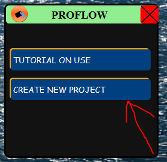
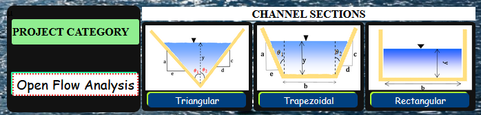
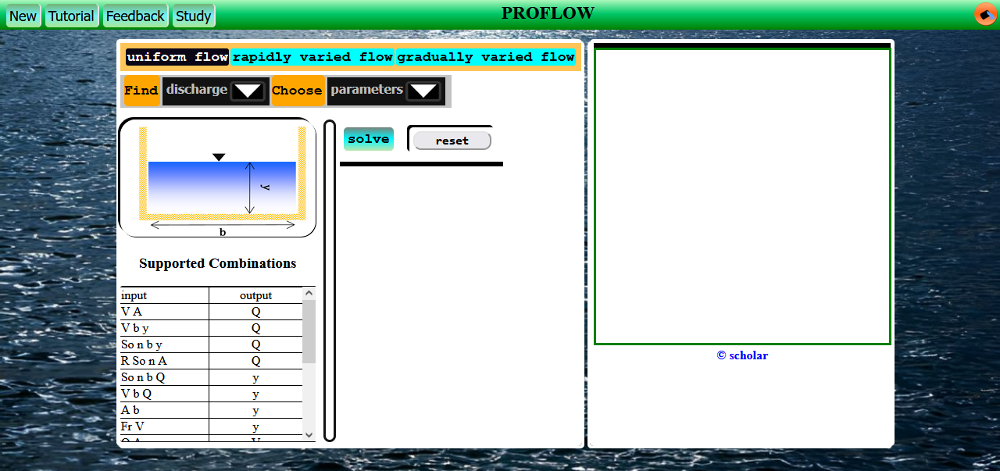

Introduction
Welcome to ProFlow, If your new to this application, please spare some time (may even be less than 10 minutes) to read through this.
It's just many illustrative images and a few sentences.
Feel free to always refer to this tutorial in case you find any trouble in using the application
Creating A Project
In ProFlow, each channel section is analysed as a complete project. For each channel section, the following flow types can be analysed.
- Unifom flow(Majority of any flow properties are calculated)
- Rapidly Varied Flow(Hydraulic Jump Analysis)
- Gradually Varied Flow(Water Surface Profile)
How to implement the above is explained in later chapters of this tutorial.
Steps to Create A new Project
-
When the app has just opened, click on the button labeled CREATE NEW PROJECT

-
Then from the list of channel sections that pop up, click on the button having the one you want to analyse.

-
You will be taken to the area were you can analyse the chosen channel for any flow type.

- Incase you have been working on a given section, and you want to switch to another, Click on the button labeled New
The create project option will show up again
- Then follow through the same procedure.